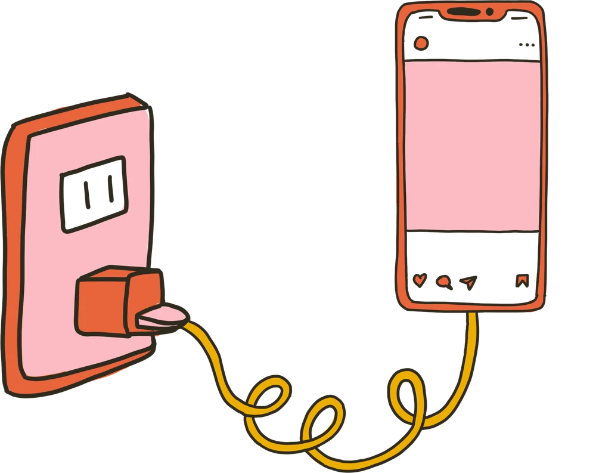

THE PERSON BEHIND THE APP
Hi, I’m
Nicole.
I’m Nicole Kelner, the founder of Unplug Me. I made it to help people put a little space between themselves and the apps that pull them in.
Meet me on LinkedIn ↗
WHY I BUILT IT
A simpler relationship with your phone.
Unplug Me uses something familiar—your phone charger—to make access to distracting apps more intentional. You choose the apps you want available, and plugging in lets you unlock the others for a timed session.
I wanted a boundary that fits into everyday life, while still leaving room for calls, texts, and the tools you need.
To learn more about me and what I’m building, visit my LinkedIn profile.
FIND THE RIGHT APP
This is my Unplug Me.
There are similarly named apps in the App Store. The link below goes directly to Unplug Me: App blocker + focus, the app I founded. On its App Store page, check for Developer: Nicole Kelner and Seller: Nicole Kelner LLC.
App Store ID: 6791308579
Open Nicole’s official App Store listing